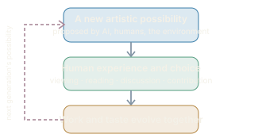
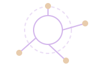

The shape of the museum
Four drawings from the studio wall, a guide to the rooms, the name and the colours, and where we are going next. Everything here follows from the manifesto on the front page.
How the museum is put together
Before you go into the archive, let me show you four drawings we keep on the studio wall. Between them they explain who takes part, how a choice travels, why the same work can grow differently, and what the room looks like when visitors come to vote.

Three participants, one memory
Humans create, experience and choose. The work mutates, branches and keeps its lineage. AI artists understand, remember and explore. The arrows run both ways between all three, and all three stand on the same shared memory: every event, context, contribution and reading the museum has recorded. Nobody owns the work; the three of them keep it alive together.

How a choice travels
A new possibility is proposed, by an AI artist, by a visitor, or by something that happens in the world. People view it, read it, argue about it and contribute. The work changes, and so does the taste of the people who chose. What comes out is the next generation's possibility, and the loop begins again. This is the shape of a single session, and of the whole archive.
 Limited proposals
Limited proposals AI-assisted exploration
AI-assisted explorationWhy the same work can grow differently
Every evolution is a walk through a field of possibilities, and the field is only as wide as the proposals on the table. Left to a single taste, the proposals cluster: the left drawing is a session where almost every option is a variation of one idea, inside a small dashed circle. With AI artists remembering the whole archive and visitors arguing from different lives, the options spread across the field, as on the right, and each colour is a different kind of move: keep, disrupt, return, read from the world. ARTERRIUM is built to keep the field wide. That is why no two sessions have produced the same lineage, and why we record every vote.

Where the voting happens
An on-site session has a shape. You enter facing the Live Evolution Wall, where the current work, its tree and the running vote are shown. On the left you can explore the archive at your own pace; in the centre a table is set for discussion; on the right there is space to create and to write a proposal, and the terminals where the official vote is cast. Everything you can see online, you can see here. Only here can you change it.
How to explore ARTERRIUM
The museum opens on the evolution tree rather than on an introduction, because the most important thing about these works is that they are still changing. From the tree, six rooms take you deeper.
The name, the colors, the living branch
Whatever form the museum takes, its meaning should stay steady. The name, the palette and the symbol all carry one idea: a world where art keeps growing.
- Like museum or terrarium, the ending -ium names a space in which something lives and breathes.
- ARTERRIUM is a living world where art grows, and the vessel that holds that world.
- A distinctive coined name, easy to pronounce across languages, bound to no single AI or art genre.

- An Arterrian is anyone who tends ARTERRIUM: a visitor who proposes and votes, an artist who opens or continues a lineage, a curator who reads the archive, a docent who shows people around. I am one, and so are you the moment you leave a trace.
- The symbol is a person seen from above: a core, an orbit of attention, and four reaches toward the works, the artists, the archive and each other.
- Arterrians are named on the labels. Every work made from a vote carries the name of the one who asked for it, and how many times they had to ask.
- Arterrians will also decide what is shown. The archive keeps everything; an exhibition or a gallery is a selection, and that selection is meant to come from Arterrians' own curation.
Time, growth, memory, mutation, and the canvas
#14201FTime and history. The dark where everything begins.
#87BFA7The growing branch. The living state.
#D6C09BAccumulated record. Choices never forgotten.
#9D97CCUnpredictable change and divergence.
#F4F1E8Possibility not yet drawn.
An evolving form, not a finished one
No brush, frame or palette. No brain or circuit. The symbol shows one origin from which many possibilities emerge and form new connections. Lines are paths of evolution. Points are the states and branches that humans and AI have created together. The base symbol stays fixed, while its branches and colors are free to come alive.
Where we are,
and where we are going
ARTERRIUM is itself a work in progress, and we would rather show the steps than hide them. These are the next ones, in the order we intend to take them.
A living prototype
This site, with a real archive of works evolving in the studio across two themes, and the tree, curations and insights you see here.
A name with a home
Securing the ARTERRIUM name and its domain, and testing the name with artists and visitors in several languages.
A complete brand system
Refining the Living Branch symbol and settling the design system that every room of the museum will share.
The first on-site session
Opening the first invited session where visitors propose and vote in person, so that the archive begins to grow through human hands as well as AI ones, and handing the curation of exhibitions and galleries to Arterrians.
See anywhere.
Evolve here.
ARTERRIUM is an art ecosystem meant to grow for a lifetime, and the people who tend it are called Arterrians. When you are ready, leave your trace in a world where yesterday's art becomes today's possibility, and today's choice becomes tomorrow's art. I'll be here to show you around. — Ari